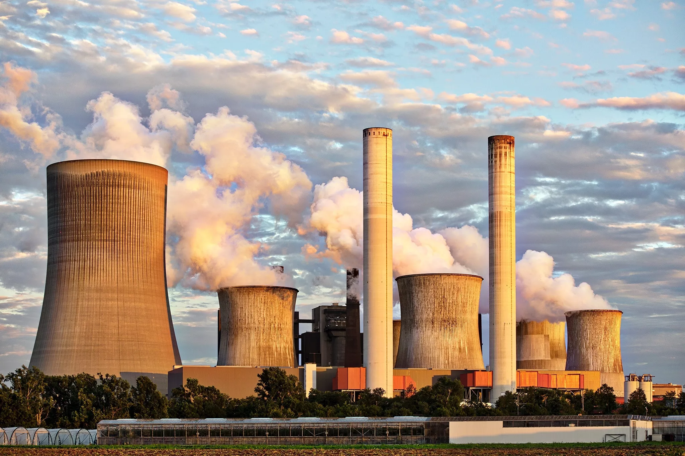

Publicado em 18/09/2024
A poluição do ar é um dos problemas ambientais mais graves enfrentados pela humanidade. Ela é causada pela emissão de poluentes atmosféricos, que são substâncias que prejudicam a qualidade do ar e podem causar danos à saúde das pessoas e dos animais, bem como ao meio ambiente como um todo.
Os poluentes atmosféricos mais comuns são os gases tóxicos, como o dióxido de enxofre (SO2), o dióxido de nitrogênio (NO2) e o monóxido de carbono (CO), e as partículas sólidas, como a poeira e a fuligem. Essas substâncias são emitidas por diversas fontes, como os veículos automotores, as indústrias, as queimadas e os incêndios florestais.
Os poluentes atmosféricos podem causar diversos problemas de saúde, como doenças respiratórias, cardiovasculares e câncer. Além disso, eles também podem prejudicar a vegetação, os ecossistemas e os recursos hídricos, contribuindo para o aquecimento global e as mudanças climáticas.
Por isso, é importante adotar medidas para reduzir a emissão de poluentes atmosféricos, como o uso de tecnologias mais limpas, o incentivo ao transporte público e o plantio de árvores. Além disso, é fundamental conscientizar a população sobre os impactos da poluição do ar e a importância de preservar o meio ambiente.